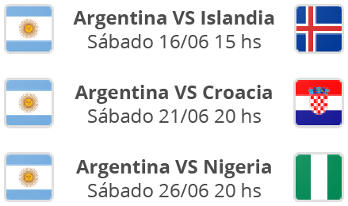

Partidos de Argentina
Requisitos para donar
- Tener entre 18 y 65 años
- Pesar más de 50kg.
- Llevar DNI
- No ir en ayunas

Dónde donar?
Hospital Fernández
Cerviño 3356, Planta baja. Palermo
Hospital Pirovano
Av. Monroe 3555. Belgrano R
Hospital Rivadavia
Av. Las Heras 2670 1°piso. Palermo
Banco de la UNC
Ciudad Universitaria, Córdoba
Centro de Sangre (Rosario)
Lavalle 356
Instituto de Hemoterapia
Calle 15 y 66, La Plata
Ver más